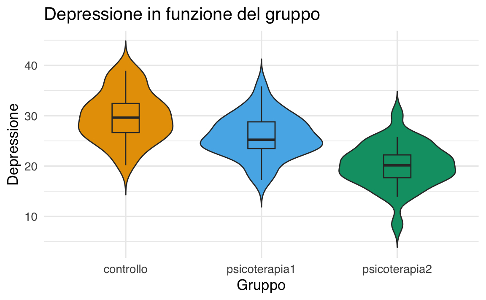
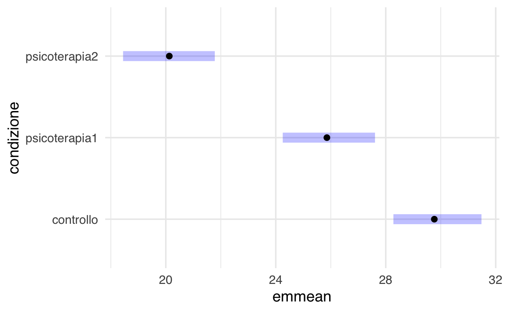

here::here("code", "_common.R") |>
source()
# Load packages
if (!requireNamespace("pacman")) install.packages("pacman")
pacman::p_load(cmdstanr, posterior, bayestestR, brms, emmeans)64 ANOVA ad una via
In questo capitolo imparerai a
- fare inferenza sulla media di un campione;
- trovare le distribuzioni a posteriori usando
brms; - verificare il modello usando i pp-check plots.
Prerequisiti
- Leggere il capitolo Geocentric models di Statistical rethinking (McElreath, 2020).
64.1 Preparazione del Notebook
64.2 Introduzione
Nel Capitolo 62 abbiamo visto come costruire regressori fittizi (dummy) per rappresentare l’effetto di variabili categoriche (fattori) a due livelli. Consideriamo ora il caso di un singolo fattore con più di due livelli. Per esempio, nel caso di una classificazione a tre categorie, possiamo adottare il modello
\[ Y_i = \alpha + \gamma_1 D_{i1} + \gamma_2 D_{i2} + \varepsilon_i, \tag{64.1}\]
utilizzando la seguente codifica per i regressori dummy:
\[ \begin{array}{c|cc} \text{Gruppo} & D_1 & D_2 \\ \hline 1 & 1 & 0 \\ 2 & 0 & 1 \\ 3 & 0 & 0 \end{array} \tag{64.2}\]
L’aspettativa della variabile di risposta in ciascun gruppo (cioè in ciascuna categoria o livello del fattore) corrisponde alla media di popolazione del gruppo, indicata con \(\mu_j\) per il gruppo \(j\). Poiché l’errore \(\varepsilon\) ha media zero, in base alle usuali ipotesi del modello lineare, prendendo l’aspettativa di entrambi i membri dell’equazione (8.1) si ottengono le relazioni seguenti tra le medie di gruppo e i parametri:
\[ \begin{aligned} \text{Gruppo 1: } \mu_1 &= \alpha + \gamma_1 \cdot 1 + \gamma_2 \cdot 0 = \alpha + \gamma_1, \\ \text{Gruppo 2: } \mu_2 &= \alpha + \gamma_1 \cdot 0 + \gamma_2 \cdot 1 = \alpha + \gamma_2, \\ \text{Gruppo 3: } \mu_3 &= \alpha + \gamma_1 \cdot 0 + \gamma_2 \cdot 0 = \alpha. \end{aligned} \tag{64.3}\]
Qui troviamo tre parametri \((\alpha, \gamma_1, \gamma_2)\) e tre medie di gruppo, per cui è possibile risolvere in modo univoco i parametri in termini delle medie di gruppo:
\[ \alpha = \mu_3, \quad \gamma_1 = \mu_1 - \mu_3, \quad \gamma_2 = \mu_2 - \mu_3. \tag{64.4}\]
Non sorprende che \(\alpha\) rappresenti la media della categoria di riferimento (il Gruppo 3), mentre \(\gamma_1\) e \(\gamma_2\) descrivono quanto le altre due medie di gruppo si discostino dalla media della categoria di riferimento.
64.3 Simulazione
Per esaminare un’applicazione pratica, simuliamo i dati di un fattore con 3 livelli:
# Imposta un seme per riproducibilità (opzionale)
set.seed(123)
# Definiamo il numero di osservazioni per ogni gruppo
n <- 30
# Definiamo le medie
mean_control <- 30
mean_psico1 <- 25
mean_psico2 <- 20
# Definiamo la deviazione standard (ipotizziamo la stessa per tutti i gruppi)
sd_value <- 5
# Generiamo i dati casuali da distribuzioni normali
controllo <- rnorm(n, mean_control, sd_value)
psicoterapia1 <- rnorm(n, mean_psico1, sd_value)
psicoterapia2 <- rnorm(n, mean_psico2, sd_value)
# Creiamo un data frame con due colonne:
# - "condizione": indica il gruppo (controllo / psicoterapia1 / psicoterapia2)
# - "punteggio": contiene i dati numerici generati
df <- data.frame(
condizione = rep(c("controllo", "psicoterapia1", "psicoterapia2"), each = n),
punteggio = c(controllo, psicoterapia1, psicoterapia2)
)head(df)
#> condizione punteggio
#> 1 controllo 27.20
#> 2 controllo 28.85
#> 3 controllo 37.79
#> 4 controllo 30.35
#> 5 controllo 30.65
#> 6 controllo 38.58tail(df)
#> condizione punteggio
#> 85 psicoterapia2 18.90
#> 86 psicoterapia2 21.66
#> 87 psicoterapia2 25.48
#> 88 psicoterapia2 22.18
#> 89 psicoterapia2 18.37
#> 90 psicoterapia2 25.74Esaminiamo la distribuzione dei dati nei tre gruppi:
ggplot(df, aes(x = condizione, y = punteggio, fill = condizione)) +
# Il violin plot
geom_violin(trim = FALSE) +
# Boxplot interno al violino
geom_boxplot(width = 0.2, outlier.shape = NA) +
labs(
title = "Depressione in funzione del gruppo",
x = "Gruppo",
y = "Depressione"
) +
# Rimuovi la legenda
theme(legend.position = "none")
Calcoliamo le medie dei gruppi:
Nel caso presente, desideriamo creare due variabili dummy per codificare il fattore \(`condizione`\), assumendo come gruppo di riferimento (baseline) la categoria controllo. Ecco come procedere:
Con questa impostazione, il modello di regressione assume la forma:
\[ Y_i = \beta_0 \;+\; \beta_1 \,(\text{psicoterapia1}_i) \;+\; \beta_2 \,(\text{psicoterapia2}_i) \;+\; \varepsilon_i, \]
dove:
-
\(\beta_0\) (l’intercetta) rappresenta la media della condizione di controllo.
-
\(\beta_1\) indica la differenza tra la media del gruppo
psicoterapia1e la media del gruppocontrollo.
-
\(\beta_2\) indica la differenza tra la media del gruppo
psicoterapia2e la media del gruppocontrollo.
Le variabili \(\text{psicoterapia1}_i\) e \(\text{psicoterapia2}_i\) sono i regressori dummy (0/1) che R crea per i due gruppi di psicoterapia, mentre \(\varepsilon_i\) è il termine di errore.
In particolare, nei vari gruppi:
Gruppo di controllo: \(\text{psicoterapia1}_i = 0\) e \(\text{psicoterapia2}_i = 0\).
\[ E[Y_{\text{controllo}}] = \beta_0. \]Gruppo psicoterapia1: \(\text{psicoterapia1}_i = 1\) e \(\text{psicoterapia2}_i = 0\).
\[ E[Y_{\text{psicoterapia1}}] = \beta_0 + \beta_1. \]Gruppo psicoterapia2: \(\text{psicoterapia1}_i = 0\) e \(\text{psicoterapia2}_i = 1\).
\[ E[Y_{\text{psicoterapia2}}] = \beta_0 + \beta_2. \]
In altre parole, \(\beta_1\) e \(\beta_2\) misurano rispettivamente di quanto la media di psicoterapia1 e di psicoterapia2 si discostino dalla media del gruppo di riferimento (controllo).
64.3.1 Stima del modello e interpretazione dei coefficienti
Per verificare quanto detto, stimiamo il modello di regressione con l’approccio frequentista:
fm1 <- lm(punteggio ~ condizione, data = df)
summary(fm1)
#>
#> Call:
#> lm(formula = punteggio ~ condizione, data = df)
#>
#> Residuals:
#> Min 1Q Median 3Q Max
#> -11.668 -2.620 -0.183 2.681 10.128
#>
#> Coefficients:
#> Estimate Std. Error t value Pr(>|t|)
#> (Intercept) 29.764 0.819 36.33 < 2e-16
#> condizionepsicoterapia1 -3.873 1.159 -3.34 0.0012
#> condizionepsicoterapia2 -9.642 1.159 -8.32 1.1e-12
#>
#> Residual standard error: 4.49 on 87 degrees of freedom
#> Multiple R-squared: 0.446, Adjusted R-squared: 0.434
#> F-statistic: 35.1 on 2 and 87 DF, p-value: 6.75e-12Possiamo anche calcolare le medie empiriche di ciascun gruppo:
out <- tapply(df$punteggio, df$condizione, mean)
out
#> controllo psicoterapia1 psicoterapia2
#> 29.76 25.89 20.12e quindi le differenze rispetto al controllo:
out[2] - out[1] # Differenza psico1 - controllo
#> psicoterapia1
#> -3.873
out[3] - out[1] # Differenza psico2 - controllo
#> psicoterapia2
#> -9.642Le stime dei coefficienti ottenute da summary(fm1) coincideranno con queste differenze (a meno di arrotondamenti). In altre parole, l’inferenza (frequentista o bayesiana) sul coefficiente \(\beta_j\) corrisponde all’inferenza su tale scostamento tra medie.
64.4 Contrasti personalizzati
Quando abbiamo un fattore con tre livelli — ad esempio, controllo, psicoterapia1 e psicoterapia2 — esistono vari schemi di codifica per le variabili dummy. Scegliere lo schema di codifica adeguato significa decidere come interpretare i coefficienti del modello. Per esempio, se vogliamo rispondere alla domanda «la media congiunta delle due psicoterapie è minore (o maggiore) della media del controllo?», possiamo definire un contrasto lineare ad hoc che confronti il gruppo controllo con la media delle due psicoterapie.
64.4.1 Possibili approcci
-
Creare un contrasto lineare ad hoc che confronti \(\{\text{psicoterapia1}, \text{psicoterapia2}\}\) con
controllo.
-
Raggruppare i due livelli di psicoterapia in un nuovo fattore binario (
controllovs.psicoterapia) e condurre un test su questo fattore a due livelli (ma in questo modo si perderebbe la distinzione tra “psicoterapia1” e “psicoterapia2”).
Il metodo più flessibile è definire direttamente contrasti personalizzati sul fattore a tre livelli. In tal modo, possiamo gestire contemporaneamente più confronti, ad esempio:
-
Contrasto 1:
controllovs. media (psicoterapia1,psicoterapia2)
-
Contrasto 2:
psicoterapia1vs.psicoterapia2
64.4.2 Contrasti personalizzati in R
Obiettivo: definire due contrasti ortogonali per confrontare (1) il gruppo di controllo con la media delle due psicoterapie e (2) psicoterapia1 con psicoterapia2.
64.4.3 Contrasto 1: Controllo vs. (psico1 + psico2)
-
Contrasto “grezzo” (non normalizzato):
\[ (-2,\; +1,\; +1) \quad \text{con} \quad -2 + 1 + 1 = 0. \]
Se usassimo questi pesi direttamente, il coefficiente stimato \(\beta_1\) sarebbe proporzionale alla differenza tra la media del
controlloe la media delle due psicoterapie. Tuttavia, il passo dacontrollo(\(-2\)) a ciascuna psicoterapia (\(+1\)) è di 3 unità, il che può rendere il coefficiente meno intuitivo da leggere. Normalizzazione
Possiamo dividere ogni valore di \((-2, +1, +1)\) per la somma assoluta (o per la radice della somma dei quadrati, o per un altro fattore) al fine di ottenere contrasti più semplici.
Ad esempio, se dividiamo \((-2, +1, +1)\) per 3, otteniamo \(\bigl(-\tfrac{2}{3}, +\tfrac{1}{3}, +\tfrac{1}{3}\bigr)\). In tal caso, passare dacontrolloapsicoterapiafa variare il contrasto di 1 (anziché di 3).
64.4.4 Contrasto 2: psico1 vs. psico2
-
Contrasto “grezzo”:
\[ (\,0,\; +1,\; -1\,) \quad \text{con} \quad 0 + 1 + (-1) = 0. \]
Questo pesi confrontano direttamente
psicoterapia1conpsicoterapia2. Normalizzazione (opzionale)
Possiamo anche qui dividere per la radice della somma dei quadrati \(\sqrt{(0^2 + 1^2 + (-1)^2)}= \sqrt{2}\), oppure lasciare i pesi così (poiché qui già passare da p1 a p2 equivale a 2 unità, e potrebbe essere chiaro abbastanza).
Nel codice seguente, si è scelto di riscalare (o “normalizzare”) i pesi in modo leggermente diverso, ottenendo numeri come 0.6667 e -0.3333. L’importante è che:
- La somma dei pesi in ciascun contrasto rimanga 0.
- I due contrasti siano ortogonali (i prodotti incrociati dei pesi per ogni livello sommano a 0).
64.5 Codice R per impostare e verificare i Contrasti
Di seguito mostriamo un esempio concreto. Prima descriviamo la matrice di contrasti “grezza” e poi quella normalizzata usata nel codice.
64.5.1 Matrice di contrasti “grezza”
# Contrasto 1 (grezzo): -2, +1, +1
# Contrasto 2 (grezzo): 0, +1, -1
my_contrasts_raw <- matrix(c(
-2, 0, # controllo
1, +1, # psicoterapia1
1, -1 # psicoterapia2
), ncol = 2, byrow = TRUE)
colnames(my_contrasts_raw) <- c("Ctrl_vs_PsicoMean", "P1_vs_P2")
rownames(my_contrasts_raw) <- c("controllo","psicoterapia1","psicoterapia2")
my_contrasts_raw
#> Ctrl_vs_PsicoMean P1_vs_P2
#> controllo -2 0
#> psicoterapia1 1 1
#> psicoterapia2 1 -164.5.2 Matrice di contrasti “normalizzata” (quella effettivamente nel codice)
Nel codice che segue, i pesi sono stati riscalati per avere differenze di “1” anziché “3” o “2” quando si passa da un gruppo all’altro. Puoi notare, per il primo contrasto, i valori \((+0.6667, -0.3333, -0.3333)\) invece di \((+1, -0.5, -0.5)\) o \((-2, +1, +1)\). Sono solo versioni multiplicativamente equivalenti.
set.seed(123)
# Esempio: definizione della matrice di contrasti
my_contrasts <- matrix(c(
0.6667, 0, # controllo = +0.6667
-0.3333, 0.5, # p1 = -0.3333
-0.3333, -0.5 # p2 = -0.3333
), ncol = 2, byrow = TRUE)
colnames(my_contrasts) <- c("Ctrl_vs_PsicoMean", "P1_vs_P2")
rownames(my_contrasts) <- c("controllo", "psicoterapia1", "psicoterapia2")
# Verifica: ogni colonna deve sommare a 0
colSums(my_contrasts) # dovrebbero essere circa (0, 0)
#> Ctrl_vs_PsicoMean P1_vs_P2
#> 0.0001 0.0000
# Verifica: i due contrasti sono ortogonali?
sum(my_contrasts[,1] * my_contrasts[,2]) # dovrebbe essere 0
#> [1] 064.5.3 Applicazione al modello
# 1) Convertiamo 'condizione' in fattore (se non già fattore)
df$condizione <- factor(df$condizione)
# 2) Assegnamo la matrice di contrasti al fattore
contrasts(df$condizione) <- my_contrasts
# 3) Stimiamo il modello di regressione lineare
mod_custom <- lm(punteggio ~ condizione, data = df)
# 4) Esaminiamo il riepilogo
summary(mod_custom)
#>
#> Call:
#> lm(formula = punteggio ~ condizione, data = df)
#>
#> Residuals:
#> Min 1Q Median 3Q Max
#> -11.668 -2.620 -0.183 2.681 10.128
#>
#> Coefficients:
#> Estimate Std. Error t value Pr(>|t|)
#> (Intercept) 25.259 0.473 53.40 < 2e-16
#> condizioneCtrl_vs_PsicoMean 6.758 1.003 6.73 1.7e-09
#> condizioneP1_vs_P2 5.770 1.159 4.98 3.2e-06
#>
#> Residual standard error: 4.49 on 87 degrees of freedom
#> Multiple R-squared: 0.446, Adjusted R-squared: 0.434
#> F-statistic: 35.1 on 2 and 87 DF, p-value: 6.75e-1264.6 Interpretazione dei coefficienti
Intercetta (\(\hat{\alpha}\))
In base allo schema di contrasti adottato, può non coincidere con la media effettiva di uno dei tre gruppi. Spesso rappresenta una qualche combinazione lineare delle medie dicontrollo,psicoterapia1epsicoterapia2.-
Primo coefficiente (“Ctrl_vs_PsicoMean”)
Confronta la media del gruppo di controllo con la media (eventualmente pesata) delle due psicoterapie.- Se è positivo, il controllo ha una media maggiore rispetto a quella (combinata) delle psicoterapie.
- Se è negativo, indica il contrario (psicoterapie > controllo).
- Se è positivo, il controllo ha una media maggiore rispetto a quella (combinata) delle psicoterapie.
-
Secondo coefficiente (“P1_vs_P2”)
Confronta direttamentepsicoterapia1conpsicoterapia2.- Se è positivo,
psicoterapia1ha un punteggio maggiore (in media) dipsicoterapia2.
- Se è negativo,
psicoterapia2superapsicoterapia1.
- Se è positivo,
Per controllare manualmente queste differenze, puoi calcolare:
- \(\text{controllo} - \frac{\text{psicoterapia1} + \text{psicoterapia2}}{2}\):
out[1] - (out[2] + out[3]) / 2
#> controllo
#> 6.758dove out[i] è la media empirica del gruppo \(i\).
- \(\text{psicoterapia1} - \text{psicoterapia2}\):
out[2] - out[3]
#> psicoterapia1
#> 5.77In sintesi,
- La matrice grezza \(\begin{pmatrix} -2 & 0 \\ 1 & 1 \\ 1 & -1 \end{pmatrix}\) e la matrice normalizzata (con valori decimali) rappresentano lo stesso schema di contrasti, ma con differenti scale numeriche.
- L’aspetto essenziale è che ciascun contrasto sommi a 0 e che i due contrasti siano ortogonali (prodotto incrociato dei pesi = 0), garantendo interpretazioni indipendenti.
- Normalizzare i pesi modifica il valore numerico dei coefficienti, ma non la loro significatività statistica.
Scegliendo opportunamente la matrice dei contrasti, possiamo verificare se la media congiunta di psicoterapia1 e psicoterapia2 differisce da quella di controllo e, contemporaneamente, se psicoterapia1 differisce da psicoterapia2. L’eventuale normalizzazione dei pesi non incide sulle conclusioni del test, ma influenza la scala numerica dei coefficienti.
64.7 Pacchetto emmeans
Le stesse analisi descritte sopra possono essere svolte utilizzando le funzioni del pacchetto emmeans. L’idea è:
- Stimare un modello lineare (come prima).
- Calcolare le stime delle medie marginali (le “means” del fattore
condizione) tramiteemmeans().
- Definire i contrasti di interesse con la funzione
contrast().
In questo modo, è possibile ottenere stime delle medie di ciascun gruppo e confrontarle (ad esempio “controllo” vs. “media delle psicoterapie” o “psicoterapia1” vs. “psicoterapia2”), anche in forma di test statistici (p-value, intervalli di confidenza, ecc.).
64.7.1 Preparazione del modello
Usiamo ora un modello bayesiano, con prior non informativi o debolmente informativi:
mod <- brm(punteggio ~ condizione, data = df, backend = "cmdstanr")summary(mod)
#> Family: gaussian
#> Links: mu = identity; sigma = identity
#> Formula: punteggio ~ condizione
#> Data: df (Number of observations: 90)
#> Draws: 4 chains, each with iter = 2000; warmup = 1000; thin = 1;
#> total post-warmup draws = 4000
#>
#> Regression Coefficients:
#> Estimate Est.Error l-95% CI u-95% CI Rhat
#> Intercept 25.25 0.48 24.30 26.21 1.00
#> condizioneCtrl_vs_PsicoMean 6.77 1.02 4.79 8.77 1.00
#> condizioneP1_vs_P2 5.73 1.20 3.34 8.03 1.00
#> Bulk_ESS Tail_ESS
#> Intercept 4391 3161
#> condizioneCtrl_vs_PsicoMean 4794 3220
#> condizioneP1_vs_P2 4632 2764
#>
#> Further Distributional Parameters:
#> Estimate Est.Error l-95% CI u-95% CI Rhat Bulk_ESS Tail_ESS
#> sigma 4.54 0.35 3.93 5.30 1.00 4090 2859
#>
#> Draws were sampled using sample(hmc). For each parameter, Bulk_ESS
#> and Tail_ESS are effective sample size measures, and Rhat is the potential
#> scale reduction factor on split chains (at convergence, Rhat = 1).
64.7.2 Calcolo delle medie marginali con emmeans
Calcoliamo le stime delle medie (ls-means) per ciascun livello di ‘condizione’:
em <- emmeans(mod, specs = "condizione")
em
#> condizione emmean lower.HPD upper.HPD
#> controllo 29.8 28.3 31.5
#> psicoterapia1 25.9 24.3 27.6
#> psicoterapia2 20.1 18.4 21.8
#>
#> Point estimate displayed: median
#> HPD interval probability: 0.95Questo oggetto em contiene le medie stimate (e i relativi errori standard) per i tre gruppi: “controllo”, “psicoterapia1” e “psicoterapia2”.
64.7.3 Confronti (pairwise) tra i gruppi
Confronti a coppie tra tutti i livelli di ‘condizione’ (psicoterapia1 vs controllo, ecc.):
pairs(em)
#> contrast estimate lower.HPD upper.HPD
#> controllo - psicoterapia1 3.91 1.62 6.21
#> controllo - psicoterapia2 9.64 7.24 11.94
#> psicoterapia1 - psicoterapia2 5.74 3.30 7.96
#>
#> Point estimate displayed: median
#> HPD interval probability: 0.9564.7.4 Contrasti personalizzati
Replichiamo i contrasti “ad hoc” (“controllo vs (psico1+psico2)” e “psicoterapia1 vs psicoterapia2”) utilizzati in precedenza:
# Definiamo i contrasti desiderati
my_list <- list(
"Ctrl_vs_PsicoMean" =
c("controllo" = 1, "psicoterapia1" = -0.5, "psicoterapia2" = -0.5),
"P1_vs_P2" =
c("controllo" = 0, "psicoterapia1" = 1, "psicoterapia2" = -1)
)
contrast(em, method = my_list)
#> contrast estimate lower.HPD upper.HPD
#> Ctrl_vs_PsicoMean 6.76 4.78 8.74
#> P1_vs_P2 5.74 3.30 7.96
#>
#> Point estimate displayed: median
#> HPD interval probability: 0.95
64.8 Altre opzioni utili di emmeans
- Credibility intervals:
confint( contrast(em, method = my_list) )
#> contrast estimate lower.HPD upper.HPD
#> Ctrl_vs_PsicoMean 6.76 4.78 8.74
#> P1_vs_P2 5.74 3.30 7.96
#>
#> Point estimate displayed: median
#> HPD interval probability: 0.95per intervalli di confidenza dei contrasti specificati.
- Test corretti per confronti multipli:
contrast(em, method = my_list, adjust = "bonferroni")
#> contrast estimate lower.HPD upper.HPD
#> Ctrl_vs_PsicoMean 6.76 4.78 8.74
#> P1_vs_P2 5.74 3.30 7.96
#>
#> Point estimate displayed: median
#> HPD interval probability: 0.95o altre correzioni (ad es. "holm", "sidak", "none").
-
Visualizzazione:
Il pacchetto
emmeansha anche funzioni per la visualizzazione (plot(em),pwpp(), ecc.).
plot(em)
In conclusione, usare emmeans semplifica notevolmente:
-
Il calcolo delle medie stimate (o “ls-means”) di ciascun livello di un fattore in un modello lineare (o GLM, o mixed model, ecc.).
-
La definizione di contrasti personalizzati, senza dover ridefinire manualmente la matrice di contrasti nel modello (come si fa con
contrasts(fattore) <- ...).
- La produzione di test e intervalli di confidenza per i confronti desiderati, integrando anche correzioni per confronti multipli se necessario.
In questo modo, è possibile ottenere esattamente gli stessi risultati che otterresti impostando manualmente i contrasti a livello di design matrix, ma con un approccio più flessibile e con meno passaggi.
64.9 Riflessioni Conclusive
L’ANOVA ad una via non è altro che l’applicazione del modello di regressione al caso di una variabile dipendente quantitativa e di un fattore con più di due livelli. L’aspetto più utile dell’ANOVA riguarda i contrasti, ovvero specifiche ipotesi sulla differenza tra le medie.
Informazioni sull’Ambiente di Sviluppo
sessionInfo()
#> R version 4.4.2 (2024-10-31)
#> Platform: aarch64-apple-darwin20
#> Running under: macOS Sequoia 15.3.1
#>
#> Matrix products: default
#> BLAS: /Library/Frameworks/R.framework/Versions/4.4-arm64/Resources/lib/libRblas.0.dylib
#> LAPACK: /Library/Frameworks/R.framework/Versions/4.4-arm64/Resources/lib/libRlapack.dylib; LAPACK version 3.12.0
#>
#> locale:
#> [1] C/UTF-8/C/C/C/C
#>
#> time zone: Europe/Rome
#> tzcode source: internal
#>
#> attached base packages:
#> [1] stats graphics grDevices utils datasets methods base
#>
#> other attached packages:
#> [1] rstan_2.32.6 StanHeaders_2.32.10 emmeans_1.10.7
#> [4] brms_2.22.0 Rcpp_1.0.14 bayestestR_0.15.2
#> [7] posterior_1.6.0.9000 cmdstanr_0.8.1 thematic_0.1.6
#> [10] MetBrewer_0.2.0 ggokabeito_0.1.0 see_0.10.0
#> [13] gridExtra_2.3 patchwork_1.3.0 bayesplot_1.11.1
#> [16] psych_2.4.12 scales_1.3.0 markdown_1.13
#> [19] knitr_1.49 lubridate_1.9.4 forcats_1.0.0
#> [22] stringr_1.5.1 dplyr_1.1.4 purrr_1.0.4
#> [25] readr_2.1.5 tidyr_1.3.1 tibble_3.2.1
#> [28] ggplot2_3.5.1 tidyverse_2.0.0 rio_1.2.3
#> [31] here_1.0.1
#>
#> loaded via a namespace (and not attached):
#> [1] tidyselect_1.2.1 farver_2.1.2 loo_2.8.0
#> [4] fastmap_1.2.0 TH.data_1.1-3 tensorA_0.36.2.1
#> [7] pacman_0.5.1 digest_0.6.37 timechange_0.3.0
#> [10] estimability_1.5.1 lifecycle_1.0.4 survival_3.8-3
#> [13] processx_3.8.5 magrittr_2.0.3 compiler_4.4.2
#> [16] rlang_1.1.5 tools_4.4.2 utf8_1.2.4
#> [19] yaml_2.3.10 data.table_1.16.4 labeling_0.4.3
#> [22] bridgesampling_1.1-2 htmlwidgets_1.6.4 curl_6.2.0
#> [25] pkgbuild_1.4.6 mnormt_2.1.1 plyr_1.8.9
#> [28] abind_1.4-8 multcomp_1.4-28 withr_3.0.2
#> [31] stats4_4.4.2 grid_4.4.2 inline_0.3.21
#> [34] xtable_1.8-4 colorspace_2.1-1 MASS_7.3-64
#> [37] insight_1.0.2 cli_3.6.4 mvtnorm_1.3-3
#> [40] rmarkdown_2.29 generics_0.1.3 RcppParallel_5.1.10
#> [43] rstudioapi_0.17.1 reshape2_1.4.4 tzdb_0.4.0
#> [46] splines_4.4.2 parallel_4.4.2 matrixStats_1.5.0
#> [49] vctrs_0.6.5 V8_6.0.1 Matrix_1.7-2
#> [52] sandwich_3.1-1 jsonlite_1.8.9 hms_1.1.3
#> [55] glue_1.8.0 codetools_0.2-20 ps_1.8.1
#> [58] distributional_0.5.0 stringi_1.8.4 gtable_0.3.6
#> [61] QuickJSR_1.5.1 munsell_0.5.1 pillar_1.10.1
#> [64] htmltools_0.5.8.1 Brobdingnag_1.2-9 R6_2.6.1
#> [67] rprojroot_2.0.4 evaluate_1.0.3 lattice_0.22-6
#> [70] backports_1.5.0 rstantools_2.4.0 coda_0.19-4.1
#> [73] nlme_3.1-167 checkmate_2.3.2 xfun_0.50
#> [76] zoo_1.8-12 pkgconfig_2.0.3Bibliografia
McElreath, R. (2020). Statistical rethinking: A Bayesian course with examples in R and Stan (2nd Edition). CRC Press.